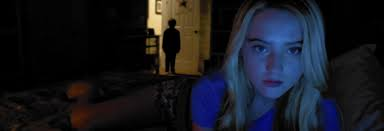
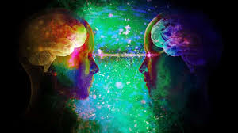

A pesar de la falta de validación científica, la parapsicología se ha dedicado a investigar estos fenómenos desde principios del siglo XX. Este campo estudia experiencias como la percepción extrasensorial, la precognición y la comunicación con supuestos espíritus. Aunque la comunidad científica en general no acepta la parapsicología como una ciencia formal, los investigadores en esta área han desarrollado diversas metodologías para intentar probar la existencia de capacidades más allá de las explicaciones convencionales.

Las experiencias paranormales suelen ser subjetivas y experimentadas por personas que creen que tienen un origen sobrenatural o folclórico.Las experiencias paranormales suelen ser subjetivas y personales. Muchas veces, están influenciadas por creencias, expectativas o factores psicológicos, como la sugestión. Algunos eventos pueden explicarse mediante mecanismos naturales, como el efecto ideomotor (movimientos inconscientes en sesiones espiritistas) o ilusiones ópticas. Sin embargo, hay quienes sostienen que las experiencias tienen un origen sobrenatural, basándose en relatos históricos, tradiciones folclóricas y vivencias personales.
 Debido a la falta de evidencia sólida y repetible, la mayoría de los fenómenos paranormales son catalogados como pseudociencia. Para que un fenómeno sea reconocido por la comunidad científica, debe ser verificable mediante experimentos controlados y producir resultados replicables. Sin embargo, las experiencias paranormales suelen depender de testimonios individuales y eventos aislados, lo que dificulta su validación bajo los estándares científicos convencionales.